【模集】串并联MOS的分析与仿真
目录
一、实验内容
以VG为参数，对于串联和并联的MOS管组合结构，推导IX关于VX的关系式，画出曲线草图和其等效跨导gm的草图，并做仿真，假设λ=γ=0.
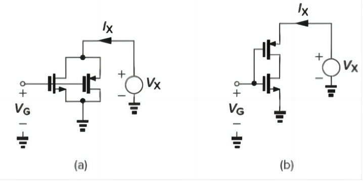
2.实验过程及结果分析
2.1实验计算与分析
2.1.1并联MOS结构的计算与分析
- 0<VG≤VTHN
在该条件下图中左边的NMOS不会导通，对右边的PMOS进行分析，通过分类讨论VX与VG的大小关系得到IX、gm与VX的关系式和曲线草图。
当0<VX<VG+|VTHP|时，PMOS不会导通，IX=gm=0。
当VG+|VTHP|<VX时，PMOS导通，IX=1/2μpCox(W/L)p(VX−VG−|VTHP|)^2,此时PMOS位于饱和区，gm=−μpCox(W/L)p(VX−VG−|VTHP|).
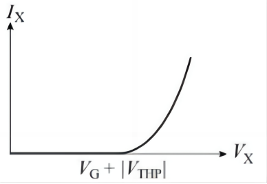
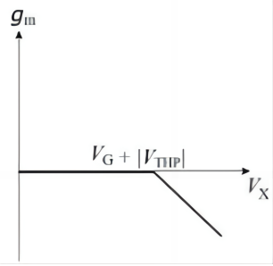
- VG>VTHN
在该条件下图1（a）中左边的NMOS会导通，，对整体结构进行分析，通过分类讨论VX与VG的大小关系得到IX、gm与VX的关系式和曲线草图。
当0<VX<VG−VTHN时，NMOS导通位于线性区，PMOS不导通。此时计算出IX=μnCox(W/L)n((VG−VTHN)VX−1/2VX2),gm=μnCox(W/L)nVX.
当VG−VTHN<VX<VG+|VTHP|时，NMOS导通位于饱和区，PMOS不导通。此时计算出IX=1/2μnCox(W/L)n(VG−VTHN)^2,gm=μnCox(W/L)n(VG−VTHN).
当VG+|VTHP|<VX时,NMOS、PMOS都导通且都处于饱和区，此时计算出IX=1/2μnCox(W/L)n(VG−VTHN)^2+1/2μpCox(W/L)p(VX−VG−|VTHP|)^2，同理可以求得gm=μnCox(W/L)n(VG−VTHN)−μpCox(W/L)p(VX−VG−|VTHP|).
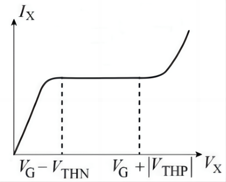
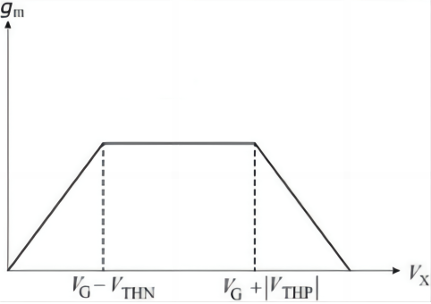
2.1.2串联MOS结构的计算与分析
- 0<VG≤VTHN
不存在导通的电路，IX=gm=0。
- VG>VTHN
当0<VX<VG+|VTHP|时，PMOS不导通，NMOS导通，此时不存在导通的电路，IX=gm=0*。*
当VG+|VTHP|<VX时，此时由于NMOS导通，NMOS和PMOS中间连接处的电压为0，所以此时PMOS必然导通且处于饱和区，而NMOS此时由于VX比较小，仍然处在线性区，当VX足够大的时候，NMOS变到饱和区，现在可以具体计算该临界点处VX的值。
临界点处有 1/2μnCox(W/L)n(VG−VTHN)^2=1/2μpCox(W/L)p(VX−VG−|VTHP|)^2，解得VX=VG+|VTHP|+α(VG−VTHN), α=μn(W/L)nμp(W/L)p.
当VG+|VTHP|<VX≤VG+|VTHP|+α(VG−VTHN)，PMOS饱和，NMOS线性，IX=1/2μpCox(W/L)p(VX−VG−|VTHP|)^2,gm=−μpCox(W/L)p(VX−VG−|VTHP|).
当VX>VG+|VTHP|+α(VG−VTHN)，PMOS、NMOS都饱和，此时可以计算出IX=1/2μnCox(W/L)n(VG−VTHN)^2,gm=μnCox(W/L)n(VG−VTHN)，此后gm正向线性增长。


2.2实验仿真与验证
采用台积电tsmc0.18um的工艺库，利用Cadence Virtuoso仿真工具进行电路仿真，NMOS和PMOS的参数设置如下表所示。
表1 MOS晶体管的模型参数
| 参数 | PMOS | NMOS |
|---|---|---|
| Vth(V) | -0.502 | 0.529 |
| W(um) | 1.5 | 1.5 |
| L(nm) | 180 | 180 |
| Multiplier | 1 | 1 |
| Fingers | 1 | 1 |
| γ | 666.67m | 666.67m |
| λ | 0.1 | 0.2 |
2.2.1并联MOS结构的仿真与验证
并联MOS结构的示意图如图所示，电路工作的基本特性在图中标出。

**（1）**0<VG≤VTHN
利用DC分析，令VG=0.1V，将右边的电压源VX进行0V−1.8V的电压扫描，绘制出IX,gm随VX变化的曲线图，如图所示。
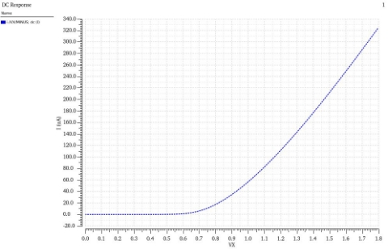
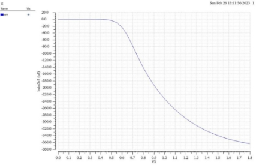
图6的结果较好的吻合了预测结果，从图7的结果中可以看出gm随VX变化的曲线与推导出的线性下降趋势有一点差别，这是因为受到了沟道长度调制效应的影响，导致结果并不是纯粹的线性变化。
**（2）**VG>VTHN
利用DC分析，令VG=0.8V，将右边的电压源VX进行0V−1.8V的电压扫描，绘制出IX,gm随VX变化的曲线图，如图所示。
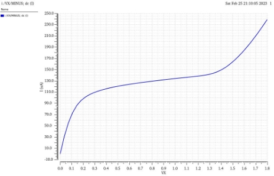
从图8中可以看出，IX在中间的变化并不是预测的保持不变，曲线有轻微的上翘趋势，这是由于沟道长度调制效应引起的。
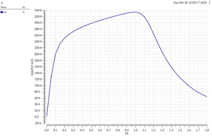
从图中可以看出，gm整体的变化符合预测中先上升后下降的趋势，但是中间的变化并不是预测的保持不变，曲线明显上翘，这是由于沟道长度调制效应引起的gm变化。
2.2.2串联MOS结构的仿真与验证

**（1）**0<VG≤VTHN
在该情况下，不存在导通的电路，IX=gm=0，仿真意义不大。
**（2）**VG>VTHN
利用DC分析，令VG=0.8V，将右边的电压源VX进行0V−1.8V的电压扫描，绘制出IX,gm随VX变化的曲线图，如图所示。
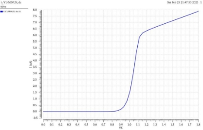
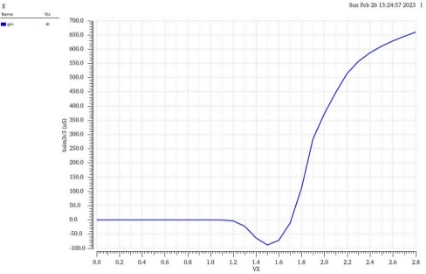
从图发现，IX,gm随VX变化的整体趋势与预测的结果大致符合，但是IX随VX变化在最后并不是一个常数，而是有一定的斜率，这是由于沟道长度调制效应引起的。
2.3拓展与讨论
前面的所有实验都是在固定VG的基础上进行探究。我们可以改变VG，绘制不同VG下串联与并联IX随VX变化的曲线族，分析VG对曲线的影响，如图所示。
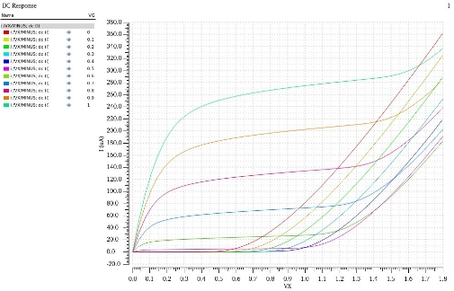
并联结构中，可以发现当VG<VTHN时，VG越大，曲线向右平移。当VG>VTHN时，VG越大，曲线中间部分逐渐抬高，IX与VX的关系曲线变为另外一种。当VG从0.5V变为0.6V时，曲线中间部分开始抬高，曲线的类型开始发生改变，这说明VTHN在0.5V-0.6V之间，与实际情况相吻合。
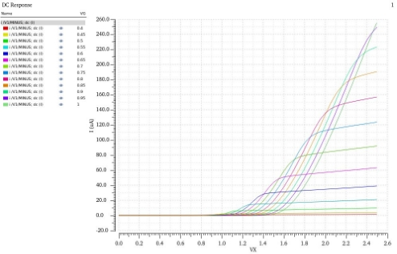
在串联结构中，可以发现当VG>VTHN时，IX在某一个值过后迅速增长，变化剧烈，之后会以小幅度的增长趋势稳定在某一个值附近。并且VG越大，曲线会向右平移，曲线最后稳定的值越大。可以发现当VG≈0.5V时，IX不在为0，开始发生变化，这说明VTHN在0.5V左右，与实际情况吻合。
- 实验总结
本实验从理论推导上掌握了NMOS和PMOS串联，并联结构的电流，跨导的变化特性，为今后分析更为复杂的电路打下基础。同时，通过本实验还掌握了基本的Cadence Virtuoso仿真软件的使用方法，明确了沟道长度调制效应是如何影响电路的特性，具有一定的意义。
 Wechat
Wechat